O que é:
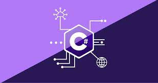A linguagem de programação C# (pronuncia-se "C sharp") é uma linguagem de programação desenvolvida pela Microsoft.
Ela faz parte do conjunto de tecnologias da plataforma .NET, que é utilizado para criar uma variedade de aplicativos, desde aplicativos de desktop até aplicativos web e jogos.
Em resumo, o C# é uma linguagem de programação versátil e poderosa, desenvolvida pela Microsoft, que é amplamente utilizada para criar uma variedade de aplicativos, especialmente no ecossistema Windows.
Sintaxe básica:
A sintaxe básica do C# é relativamente simples e fácil de entender. Ela segue um tipo de sintaxe parecida com o Javascript que é outra linguagem de programação. A sintaxe é um dos tópicos mais importantes e relevantes para o aprendizado de uma nova linguagem de programação, veja ela a seguir:
Exemplo: // Este é um comentário de linha única
/*
Este é um comentário
de várias linhas
*/
Exemplos:
int: Números inteiros.
float e double: Números de ponto flutuante.
char: Caracteres individuais.
bool: Valores booleanos (verdadeiro ou falso).
string: Sequências de caracteres.
Exemplos:
if-else: Permite tomar decisões com base em condições.
switch: Oferece uma alternativa para várias condições.
for: Laço de repetição com controle explícito.
while: Laço de repetição com controle baseado em condição.
+ (Adição): int resultado = 5 + 3; // resultado = 8
- (Subtração): int resultado = 7 - 4; // resultado = 3
* (Multiplicação): int resultado = 2 * 6; // resultado = 12
/ (Divisão): int resultado = 10 / 2; // resultado = 5
% (Módulo) (Retorna o resto da divisão: int resultado): 10 % 3; // resultado = 1 (porque 10 dividido por 3 é 3 com resto 1)
== (Igual a): bool igual = (5 == 5); // igual é verdadeiro
!= (Diferente de): bool diferente = (5 != 3); // diferente é verdadeiro
> (Maior que): bool maior = (7 > 4); // maior é verdadeiro
< (Menor que): bool menor = (2 < 6); // menor é verdadeiro
>= (Maior ou igual a): bool maiorOuIgual = (8 >= 8); // maiorOuIgual é verdadeiro
<= (Menor ou igual a): bool menorOuIgual = (3 <= 5); // menorOuIgual é verdadeiro
&& (E lógico): bool resultado = (true && false); // resultado é falso
|| (OU lógico): bool resultado = (true || false); // resultado é verdadeiro
! (NÃO lógico): bool resultado = !(true); // resultado é falso
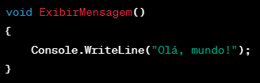
Exemplo: int[] numeros = new int[3] { 1, 2, 3 };
Observe a programação a seguir:
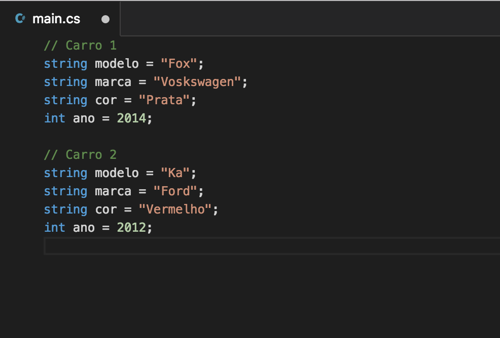
// - Comentário para indicar que é sobre o Carro 1 e 2.
string modelo - exemplo de delaração de variavel do tipo string.
int ano - indica um número no qual o modelo do carro foi feito
Estruturas de Controle de Fluxo
As estruturas de controle de fluxo são como "direcionadores de tráfego" no mundo da programação. Elas ajudam o seu código a tomar decisões e a repetir tarefas. Serve basicamente para moldar o comportamento do código com base em condições e ações do usuário.
1. if-else (Se-Senão):
O if é como uma pergunta: "Se algo for verdadeiro, faça isto; senão, faça aquilo.", Segue um exemplo:
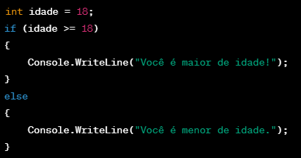No exemplo a cima podemos ver que ele define uma variavel primeiro.
Depois ele utiliza o if para indicar se o valor da variavel "idade" é maior ou igual a 18.
Se for ele escreve na tela a mensagem "Você é maior de idade".
Se não ele escreve na tela a mensagem "Você é menor de idade".
2. for (Para):
O for é usado quando você quer repetir algo uma quantidade específica de vezes. É como uma contagem: "Faça isso para cada número de 1 a 5."
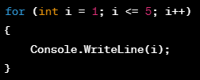O for é muito usado para repetições, dentro dele vemos que é declarado uma variavel, e que ela vai ser incrementada até que ela seja maior que 5, após isso a afirmação se torna falsa e o for para de ser executado.
Basicamente o código define que i = 1, depois ele escreve ele toda vez que o código for repetido por conta da condição i <= 5, e no final ele incrementa um numero a mais, fazendo assim ele contar de 1 até 5 no console.
3. While(enquanto):
O while é outra estrutura de controle de fluxo em C# que é usada para repetir uma ação enquanto uma condição específica for verdadeira. É como dizer: "Continue fazendo algo enquanto isso for verdadeiro."
Veja o exemplo a seguir:
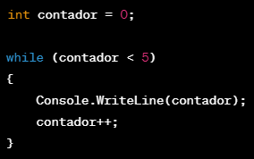Neste exemplo, Inicializamos a variável contador com 0.
- O bloco de código dentro do while será repetido enquanto a condição contador < 5 for verdadeira.
- A cada repetição, o valor de contador é impresso no console.
- O contador++ incrementa o valor de contador a cada repetição.
Métodos e Funções:
Em C#, métodos e funções são blocos de código que realizam tarefas específicas e podem ser chamados (invocados) a partir de outras partes do programa, isso ajuda na não repetição desnecessária do código específico.
Declaração de Método:
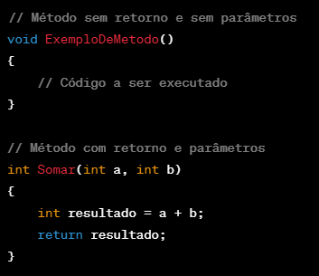
Chamada de Método:
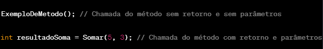
Veja o exemplo a seguir:
Retorno de Métodos:
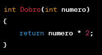
Modificadores de Acesso:
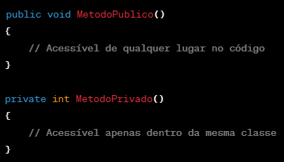
Coleções e Iteração
Arrays em C#:
Arrays são estruturas de dados que armazenam elementos do mesmo tipo em uma sequência fixa.
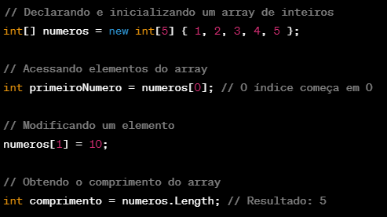Listas em C#:
Listas são estruturas de dados dinâmicas que podem crescer ou encolher conforme necessário. Elas fazem parte da biblioteca de coleções genéricas em C# (namespace System.Collections.Generic).
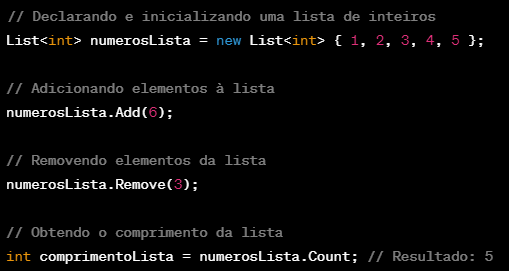Iteração com foreach:
O foreach é uma construção de controle de fluxo que facilita a iteração (percorrer) elementos em uma coleção, como arrays e listas:
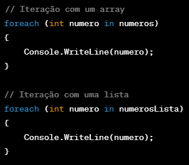Manipulação de Strings:
A manipulação de strings em C# é uma parte importante da programação, pois frequentemente você precisa lidar com texto para criar, modificar ou exibir informações.
Métodos Importantes:
1. Length: Obtém o comprimento da string.
2. Substring: Obtém uma parte da string.
3. ToUpper e ToLower: Converte para maiúsculas ou minúsculas.
4. Replace: Substitui parte da string por outra.
5. Concat: Concatena strings.
Tratamento de Exceções:
O tratamento de exceções em C# é uma prática essencial para lidar com situações imprevistas ou erros durante a execução do programa. Exceções podem ocorrer devido a erros de lógica, falhas de comunicação com outros sistemas, ou qualquer situação que cause um comportamento anormal.
Bloco try-catch:
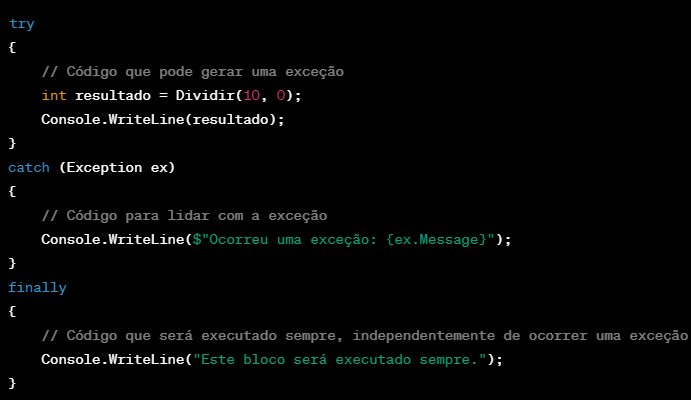
Tipos Específicos de Exceção:
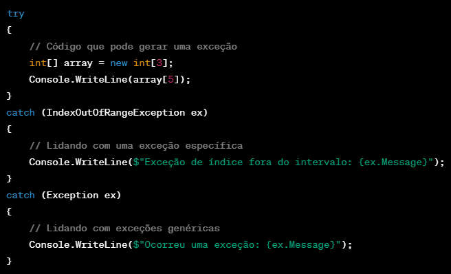
LINQ